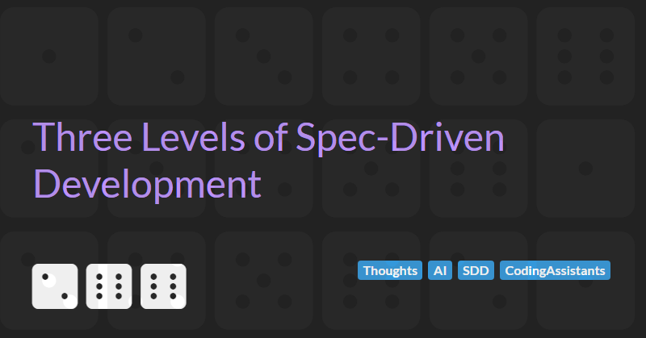

Three Levels of Spec-Driven Development

Every fast-moving corner of our industry eventually grows a buzzword that means whatever the person saying it needs it to mean, and right now that buzzword is spec-driven development.
The most useful attempt I have seen to untangle it comes from Birgitta Böckeler at Thoughtworks. In Understanding Spec-Driven-Development she points out that under the single banner of SDD there are really three levels, stacked one on top of another:
- Spec-first: A well thought-out spec is written first, and then used in the AI-assisted development workflow for the task at hand.
- Spec-anchored: The spec is kept even after the task is complete, to continue using it for evolution and maintenance of the respective feature.
- Spec-as-source: The spec is the main source file over time, and only the spec is edited by the human, the human never touches the code.
Notice that the first level says nothing about keeping the spec: by implication it is thrown away once the work is done. That single decision, discard or retain, is the whole difference between spec-first and spec-anchored, and it is where most of the trouble starts.
The interesting question is not whether to write a spec, but what to do with it once the code exists: hold on to it, or let it go?
Each Level Already Has a Tool
These three levels are not just a tidy abstraction. Each one already has a flagship tool built around it, which is the best evidence that the taxonomy is describing something real and not merely one writer's invention. Walk up the ladder and you can put a name to every rung.
Spec-first is where GitHub's spec-kit actually lands, whatever its manifesto says. That manifesto reaches for the very top of the ladder, declaring that the spec, not the code, is the thing you maintain:
In this new world, maintaining software means evolving specifications. [...] The lingua franca of development moves to a higher level, and code is the last-mile approach.
In practice it is far more modest. You drive it through a piece of work with slash commands, specify then plan then tasks, and spec-kit spins up a branch for each spec. The spec's life is the life of that change request, not the life of the feature. Grand marketing, spec-first behaviour.
Spec-anchored is where Kiro sits. It produces a requirements.md, a design.md, and a tasks.md per feature and then keeps them: the documents persist in the project's .kiro directory alongside its steering files, and the workflow is built around revisiting and evolving them as the feature changes. Böckeler read Kiro as mostly spec-first when she tried it, but a tool whose specs are durable, per-feature artefacts is spec-anchored by design.
Spec-as-source is where Tessl is heading. Here the spec is the primary artefact and the code is generated to match it, with the human editing the spec and never touching the code. It is the only one of the three that genuinely reaches the top of the ladder, and I will come back to why that is a mistake.
For all their differences, every one of these tools starts in the same place. As Böckeler puts it, all the SDD approaches she found are spec-first, but not all of them strive to be spec-anchored or spec-as-source. Writing a spec before you write code is the common floor. The disagreement is entirely about what you do with the spec afterwards: throw it away, keep it alongside the code, or promote it above the code. That is the whole argument in one sentence, and it is worth having before the term frays completely. Böckeler notes that SDD is already semantically diffused:
I've even recently heard people use "spec" basically as a synonym for "detailed prompt".
Spec-First Is Just Good Practice With a New Name
Sitting down to write a clear, structured description of what you want before you let an agent loose is simply good practice, and it is good practice for exactly the same reasons that writing a failing test first, or sketching a design before a big change, has always been good practice. You are forced to think before you build. You hand the agent an unambiguous target instead of a vague gesture. The spec earns its keep entirely during the task, as scaffolding for the work in front of you.
And crucially, when the task is done, you let the scaffolding go. The code is the deliverable. The code is the source of truth. I'm not being sentimental about hand-typed code. The code is simply the only artefact that actually runs, and the only one your users ever experience. Everything else is a description of the code, and a description is only ever as trustworthy as the discipline keeping it current.
The usual objection to throwing the spec away is that you lose the human-readable account of why the code is the way it is. A few years ago that may have been a fair worry. It is much less of one now. The same large language models powering these workflows are genuinely good at reading an unfamiliar codebase and explaining what it does. Every serious assistant now ships an "explain this code" feature precisely because this is one of the things the models do reliably well. If you need to understand a module, you no longer need a stale prose document that claims to describe it. You can ask the model to summarise the thing that is actually true, the code, and get a faithful answer. I have made a related argument about why the code, and not the English above it, is where the real meaning lives in Sideways, Not Up.
Böckeler reaches a similar conclusion from the other direction. After wading through the heap of markdown that spec-kit generated for a modest feature, she admits she would rather review code than all of those files. So would I. If the choice is between reviewing the source of truth and reviewing a verbose paraphrase of it, the source wins every time.
Spec-Anchored Is the "Comment Problem" Again
The moment you decide to keep the spec after the task is finished, you have signed up for a maintenance obligation, and we have seen this particular obligation fail before. We called it the code comment.
A comment is a human-readable description of nearby code that lives next to it and is supposed to stay in step with it. An anchored spec is a human-readable description of a feature that lives next to it and is supposed to stay in step with it. The shape of the failure is identical. The code changes under deadline, the prose does not, and within a few sprints you have a document that confidently describes a system that no longer exists. Wikipedia's own entry on comments puts the danger plainly: comments "may be detrimental if they are obsolete, redundant, incorrect or otherwise make it more difficult to comprehend the intended purpose for the source code". Martin Fowler made the sharper version of the point years ago in Refactoring, where comments are often a deodorant sprayed over code that should simply have been made clearer. A spec kept alive purely as documentation is the same deodorant, just sprayed over a whole feature.
A spec-anchored advocate will say, fairly, that an anchored spec is not just unverified prose like a comment. It can be linked to tests, and it can be checked against the code by tooling, so the drift gets detected rather than silently accumulating. Tessl's pitch leans hard on exactly this: living specs plus linked tests act as guardrails that stop an agent quietly breaking existing behaviour. If that worked reliably, my comments analogy would be in trouble.
The catch is the word reliably. Automated drift detection between a natural-language spec and running code is the thing that has to work, and at the moment it is far more aspiration than shipping reality. Without it, as even the enthusiasts concede, spec-anchored development collapses straight back into documentation-driven development, which is to say back into the comment problem. The discipline of keeping two representations in sync has defeated us at the small scale of a one-line comment for decades. I am not persuaded we will suddenly master it at the scale of a whole feature simply because the description is longer and lives in its own file.
Spec-As-Source Is Nonsense
Which brings us to the top of the ladder, where the human edits only the spec, never touches the code, and the code is regenerated from the spec on demand, sometimes stamped with a cheerful // GENERATED FROM SPEC - DO NOT EDIT. This is the level I think is simply a mistake, and the reason is that we have already run this experiment.
Böckeler makes the connection that everyone reaching for the TDD and BDD analogies misses. The real precedent for spec-as-source is model-driven development. On MDD projects the model was the spec, expressed in UML or a textual DSL, and a code generator turned it into the running system. Developers were told to edit the model and leave the generated code alone. It sounds wonderful, and for business applications it never took off, because it sat at an awkward abstraction level and bred overhead and constraints faster than it removed them. One of its defining failures was the round-trip problem: the instant a change had to be made in the generated code, or the model and code fell out of step, the whole edifice started to crack.
The fashionable counter is that large language models dissolve MDD's constraints. You no longer need a rigid, parseable spec language, and you no longer need to hand-build a brittle generator, because the model is the generator. The most ambitious version of this, argued recently in InfoQ, is that the specification becomes the authoritative definition of the system and the running code is continuously forced to conform to it, with architecture made executable rather than advisory. As a vision it is coherent and even attractive.
But look at what you trade. MDD's rigid DSL was a genuine asset as well as a burden: because it was parseable, the tooling could tell you when your spec was incomplete, inconsistent, or invalid, and the generator was deterministic, so the same model always produced the same system. Replace that DSL with natural language and an LLM and you keep MDD's awkward abstraction level whilst throwing away its one redeeming property and adding a new vice. The generation is now non-deterministic. The same spec can produce different code on different runs, which is why Böckeler found herself iterating on a Tessl spec to make it ever more precise just to get repeatable output, an exercise that rediscovered every pain of writing a complete and unambiguous specification. Her warning is the one I would underline: spec-as-source risks ending up with the downsides of both approaches, the inflexibility of MDD and the non-determinism of LLMs. That is not a new rung on the ladder, it is two old problems bolted together.
Where This Leaves Us
I do not think any of this is an argument against using AI to build software, and it is certainly not an argument against thinking before you code. It is an argument about where the truth of a system should live. Keep it in the code, the one artefact that runs and can be checked, and use AI as the thing that helps you write that code well and understand it later. The moment you move the truth into a parallel document and ask humans or Agents to maintain the document instead, you have recreated a problem we have failed to solve at every scale we have tried, from the inline comment to the UML model.
Spec-first respects that. It uses the spec where it is strongest, as a way of thinking clearly and instructing an agent precisely, and then gets out of the way. Spec-anchored asks you to keep two truths in sync and trusts tooling that does not yet exist to stop them drifting. Spec-as-source asks you to abandon the only deterministic, checkable artefact you have in exchange for a non-deterministic paraphrase of it. I have explored the broader version of this question in Is Spec-Centric Development The Future?, and my answer has only firmed up since.
Of course this is my view, formed by my own scars, and yours may differ. If you are running spec-anchored or even spec-as-source on a real codebase over a real period of time, I would genuinely like to hear how the sync holds up, because that is the experiment that would change my mind.
Write a good spec, use it, and then trust the code, because the code is the only thing that was ever telling the truth.